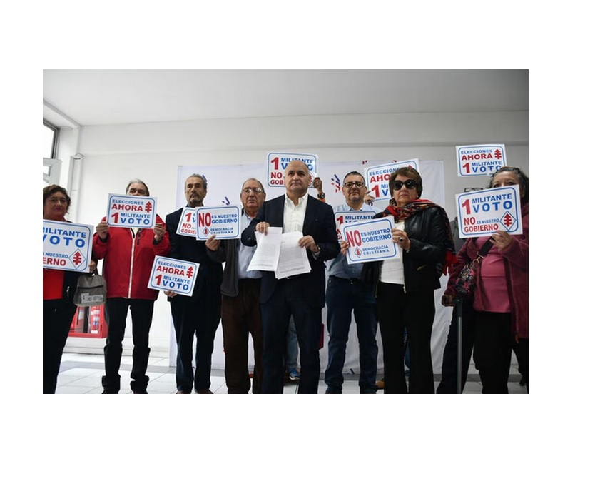

Politica
Autor: Bastian Hartal
Una facción de militantes de la Democracia Cristiana llegaron hasta la sede del partido para manifestar su rechazo a la alianza con las fuerzas políticas oficialistas y llamaron a un plebiscito para consultar a las bases el próximo 28 de mayo.
Este viernes, dirigentes de la Democracia Cristiana llegaron hasta la sede del partido para rechazar la idea de unir alianzas con los partidos oficialistas. El exvicepresidente de la DC, Rodrigo Albornoz, remarcó que no deben incorporarse a un Gobierno del que no forman parte. “No nos representa, es un proyecto político distinto” a lo que aspira la DC y la ciudadanía, explicó. Además, el sector contrario a unirse al Gobierno planteó la idea realizar un plebiscito interno el próximo 28 de mayo para consultar a las bases del partido.

El presidente de la Democracia Cristiana, Alberto Undurraga, propuso un pacto entre la colectividad, el oficialismo y la centro izquierda para las elecciones municipales de 2024, tras la irrumpción del Partido Republicano en las elecciones de consejeros constitucionales.
“Uno de los desafíos, no solo para la Democracia Cristiana, sino que también para la centroizquierda en general, es sentarnos a conversar para lograr un acuerdo que incorpore a todo el oficialismo y también a la Democracia Cristiana, y otras fuerzas que quieran sumarse, de cara a la próxima elección municipales”, señaló en Noticias Express de CNN Chile.